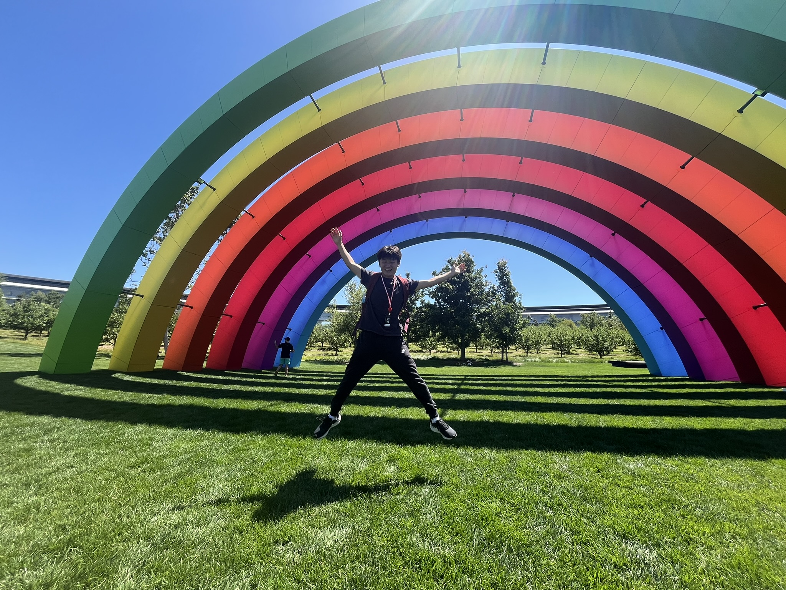

Forma
A custom tool for planning exhibitions in 3D.
I designed and built Forma in Swift for curators to arrange artwork, check measurements, and explore gallery layouts from multiple views. It is a custom downloadable tool for iPhone and iPad, used by more than 25 curators at OCMA and the Moulton Museum. Forma won Apple’s Swift Student Challenge.

Inside the tool
Swift · 3D exhibition planning


Swift Student Challenge
Forma was selected as a winner of Apple’s Swift Student Challenge. After winning, I was invited to Apple Park for the Worldwide Developers Conference.
